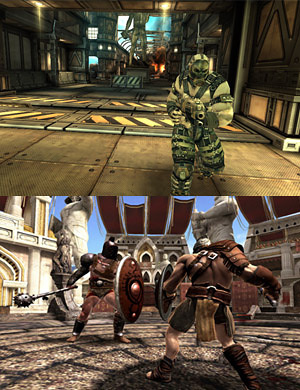
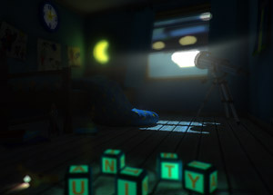

Thank you for helping us improve the quality of Unity Documentation. Although we cannot accept all submissions, we do read each suggested change from our users and will make updates where applicable.
For some reason your suggested change could not be submitted. Please try again in a few minutes. And thank you for taking the time to help us improve the quality of Unity Documentation.
What are mobile devices capable of? How should you plan your game accordingly? If your game runs slow, and the profiler indicates that it’s a rendering bottleneck, how do you know what to change, and how to make your game look good but still run fast? This page is dedicated to a general and non-technical exposition of the methods. If you are looking for the specifics, see the Rendering Optimizations page.

What you can reasonably expect to run on current consumer mobiles:
Lightmapped static geometry. But beware of:
Using a lot of alpha-test shaders
Bumpmapping, especially using built-in shaders.
High polygon count
Animated characters, even with fancy shaders! But beware of:
Massive crowds or high-poly characters
2D games with sprites. But beware of:
Overdraw, or, lots of layers drawn on top of each other.
Particle effects. But beware of:
High density on large particles. (Lots of particles drawn on top of each other. This is another overdraw situation)
Ridiculous numbers of particles, or particle colliders.
Physics. But beware of:
Mesh colliders.
Lots of active bodies.

What you CANNOT reasonably expect to run on current consumer mobiles:
Fullscreen screen image effects like glow and depth of field.
Dynamic per-pixel lighting (multiple lights marked Important and not baked into the lightmap)
Every affected object is drawn an additional time for every dynamic light you use, and this gets slow quickly.
Real time shadows on everything
Unity has support for real time shadows on mobile platforms, but their use must be very judicious, and likely limited to higher-end devices.
Shadowgun is an impressive example of what can be done on current mobile hardware. But more specifically, it’s a good example of what cannot be done, and how to get around the limitations. Especially because a small part of the game has been made publicly available in this blog post.
Here’s a basic rundown of things that Shadowgun does in order to keep performance up:
Dynamic lighting - barely used.
Blob shadows and Lightmaps are used instead of any real shadows.
Lightprobes, instead of real lights, are used on their characters.
Muzzle flashes added into the lightprobe data via script.
The only dynamic per-pixel lighting is an arbitrary light direction used to calculate a BRDF on the characters.
Bumpmapping - barely used.
Real bumpmapping only used on characters.
As much contrast and detail as possible is baked into the diffuse texture maps. Lighting information from bumpmaps is baked in.
A good example is their statue texture, or their shiny wall, as seen on the right. No bumpmaps are used to render these, the specularity is faked by baking it into the texture. Lightmapping is combined with a vertex-lighting-based specular highlight to give these models a shiny look.
If you want to learn how to create textures like this one, check out the Rendering Optimizations page.
Dense particles - avoided.
UV-scrolling textures used instead of dense particle effects.
Fog effects - avoided.
Their god rays are hand-modeled.
Single planes that fade in and out are used to achieve cinematic fog effects without actually rendering any fog.
This is faster because the planes are few and far between, and it means that fog doesn’t have to be calculated on every pixel and in every shader.
Glow - avoided.
Blended sprite planes are used to give the appearance of a glow on certain objects.
This demo was designed to show what Unity is capable of on high-end Android devices.
Dynamic lighting - not used.
Lightmaps only.
Bumpmapping - used
The bricks are all bumpmapped, lit by directional lightmaps. This is where the “high-end devices” part comes into play.
Real time reflections - limited.
They carefully placed their real-time reflecting surfaces separately and in isolated areas, so that only one runs at a time, and the environment that needs to be rendered twice can be easily culled.
Bottom line - What this means for your game
The more you respect and understand the limitations of the mobile devices, the better your game will look, and the smoother it will perform. If you want to make a high-class game for mobile, you will benefit from understanding Unity’s graphics pipeline and being able to write your own shaders. But if you want something to grab to use right away, ShadowGun’s shaders, available here, are a good place to start.
Don’t Simulate It, Bake It!
There is no question that games attempt to follow the laws of nature. The movement of every parabolic projectile and the color of every pixel of shiny chrome is derived by formulas first written to mimic observations of the real world. But a game is one part scientific simulation and one part painting. You can’t compete in the mobile market with physically accurate rendering; the hardware simply isn’t there yet, if you try to imitate the real world all the way, your game will end up limited, drab, and laggy.
You have to pick up your polygons and your blend modes like they’re paintbrushes.
The baked bumpmaps shown in Shadowgun are great examples of this. There are specular highlights already in the texture - the human eye doesn’t notice that they don’t actually line up with the reflected light and view directions - they are simply high-contrast details on the texture, completely faked, yet they end up looking great. This is a common cheating technique which has been used in many successful games. Compare the visor in the first Halo screenshot ever released with the visor from this release screenshot. It appears that the armor protrusions from the top of the helmet are reflected in the visor, but the reflection is actually baked into the visor texture. In League of Legends, a spell effect appears to have a pixel-light attached to it, but it actually is a blended plane with a texture that was probably generated by taking a screenshot of a pixel light shining on the ground.
What works well:
Lightmapped static geometry
Dramatic lighting and largely dynamic environments don’t mix. Pick one or the other.
Lightprobes for moving objects
Current mobile hardware is not really cut out for lots of dynamic lights, and it can’t do shadows. Lightprobes are a really neat solution for complex game worlds with static lighting.
Specialized shaders and detailed, high-contrast textures
The shaders in ShadowGun minimize per-pixel calculations and exploit complex and high-quality textures. See the Rendering Optimizations page for information on how to make textures that look great even when the shader is simple.
Cartoon Graphics
Who says your game has to look like a photo? If you make lighting and atmosphere the responsibility of the texture artist, not the engine, you hardly even have to worry about optimizing rendering.
What does not work:
Glow and other Post processing effects
Approximate such effects when possible by using blended quads, check out the Shadowgun project for an example of this.
Bumpmapping, especially with the built-in shaders
Use it sparingly, only on the most important characters or objects. Anything that can take up the whole screen probably shouldn’t be bumpmapped.
Instead of using bump maps, bake more detail and contrast into the diffuse texture. The effect from League of Legends is an interesting example of this being used successfully in the industry.
{kind=link}
{kind=link}